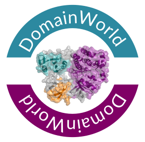
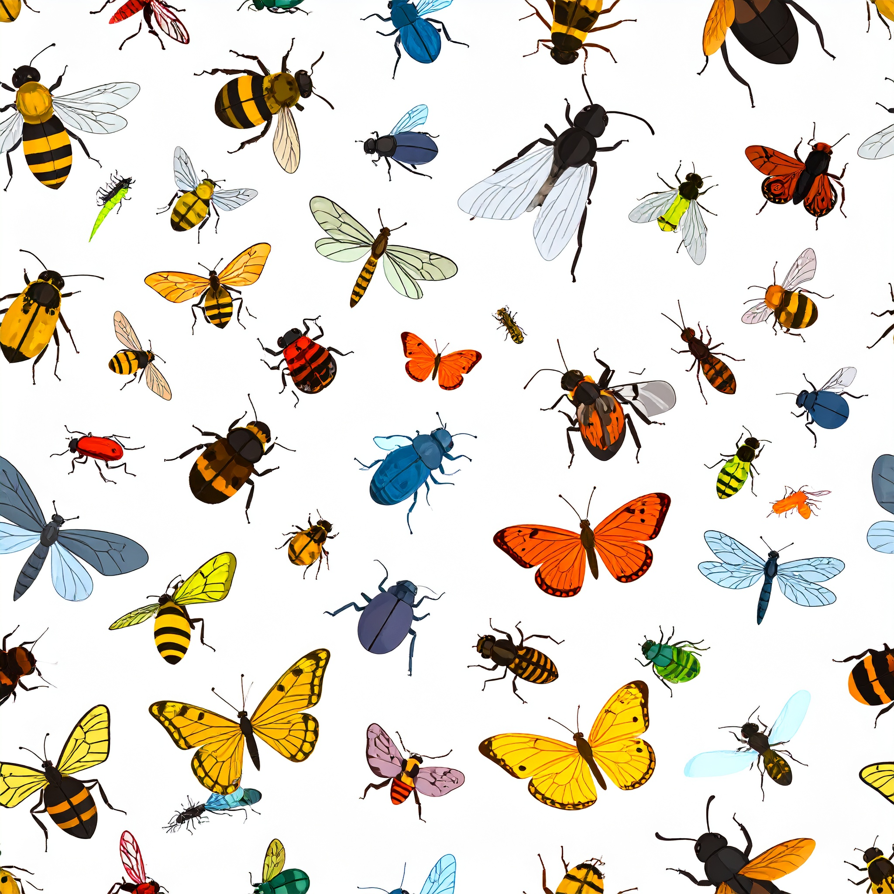

Elias Dohmen


My Research
Scientific research, to me, is about more than solving puzzles — it's about curiosity and building the tools to explore the bigger picture with creativity and openness. In a time of unprecedented data availability, we face not a shortage of information, but a need for innovative, reproducible methods that help us interpret it meaningfully and responsibly.
My work bridges evolutionary biology and computational science, with a focus on comparative OMICS, phylogenomics, and the development of open-source tools for biological data analysis. I aim to transform complex data into clear biological insight.
I'm committed to transparent, scalable, and collaborative research. Reproducibility and accessibility are central to how I design and share methods - ensuring science remains a collective, cumulative effort.
Below you'll find an overview of my research interests and selected projects I am currently leading or contributing to. These span basic evolutionary questions to applied method development — all united by the idea that science must be open, curious, and useful to make a real difference.
Research Interests
Driven by curiosity and collaboration, my research integrates insights from multiple disciplines across the following focus areas:
-

Protein domains are the structural and functional building blocks of proteins, enabling modular rearrangements that drive protein innovation. Due to their high conservation across vast evolutionary timescales, protein domains are ideal molecular markers for evolutionary analyses and large-scale comparative proteomics. Since my PhD, I've been fascinated by these building blocks, developing several tools based on them — earning me the nickname Dr. Domain.
Visit the tools page to explore programs I've developed in this field, check out related teaching projects, or browse relevant publications:
📄 📄 📄 📄 📄 📄 📄 -

De novo genes arise from previously non-coding genomic regions, challenging the traditional view that new genes primarily emerge through duplication of existing ones. These genes, often rapidly evolving and functionally novel, represent a dynamic and emerging field of study. In collaboration with researchers like Anna Grandchamp, I focus on standardising methods for detecting and annotating de novo genes, aiming to improve reproducibility and comparability across studies.
For related tools, see the tools page, explore associated teaching projects, or browse relevant publications:
📄 📄 📄 📄 -
Epigenetics and Gene Regulation are intricate fields that pose significant challenges when integrating diverse OMICS data types - such as transcriptomics and methylomics - to understand how factors like methylation or transcription factor binding influence gene expression. Visualising and interpreting such large, noisy datasets requires robust, scalable approaches. In various collaborations, I develop methods ranging from methylation databases to gene co-expression networks, always striving to find intuitive ways to analyse and present complex data.
Explore related tools on the tools page, browse relevant teaching projects, or view my publications:
📄 📄 📄 📄 📄 -

Insects are the most diverse and species-rich group of animals on Earth, having adapted over 500 million years to thrive in nearly every ecosystem. Their relevance spans from public health (e.g. disease-vectoring mosquitoes) to agriculture (pollinators) and ageing/longevity (e.g. the extraordinary lifespan of termite queens). While I work across all domains of life - from bacteria and fungi to plants and mammals - insects consistently capture my attention. They frequently display some of the most fascinating evolutionary innovations, particularly in the context of adaptation and complex traits.
Visit the tools page for programs I've developed, explore related teaching projects, or view relevant publications:
📄 📄 📄 📄 📄 📄